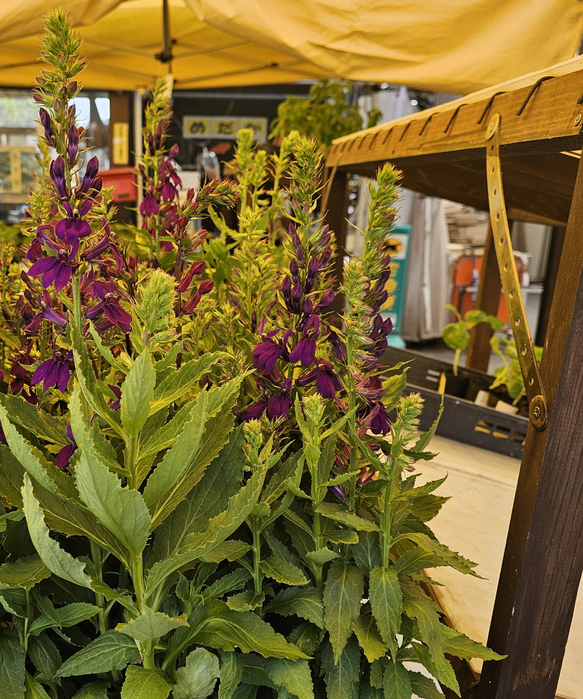
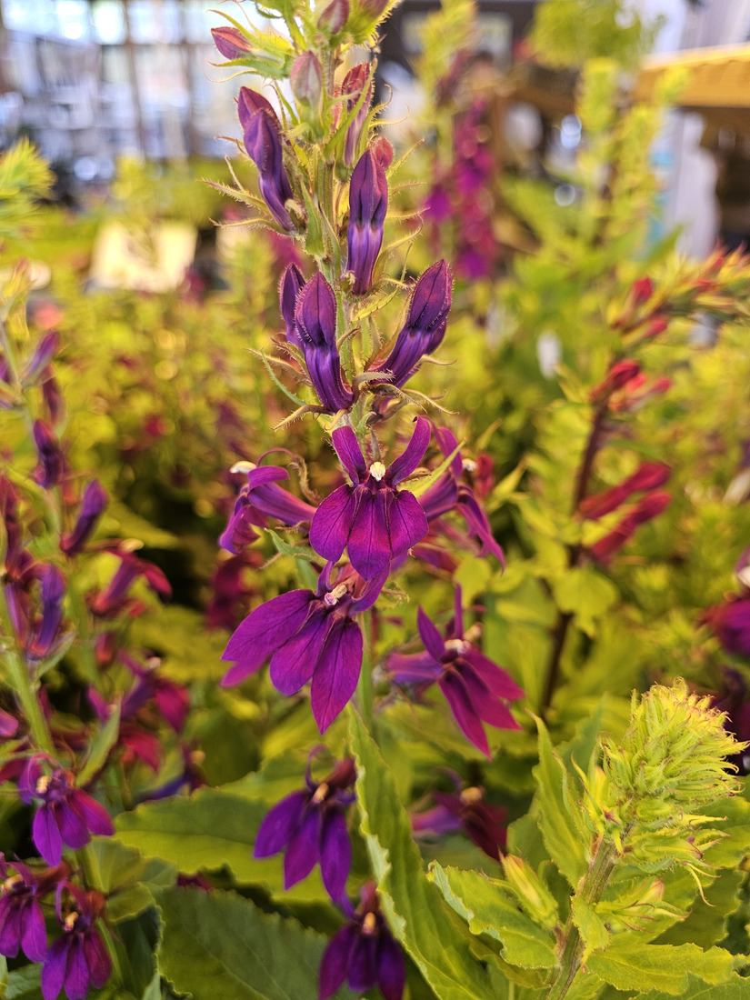
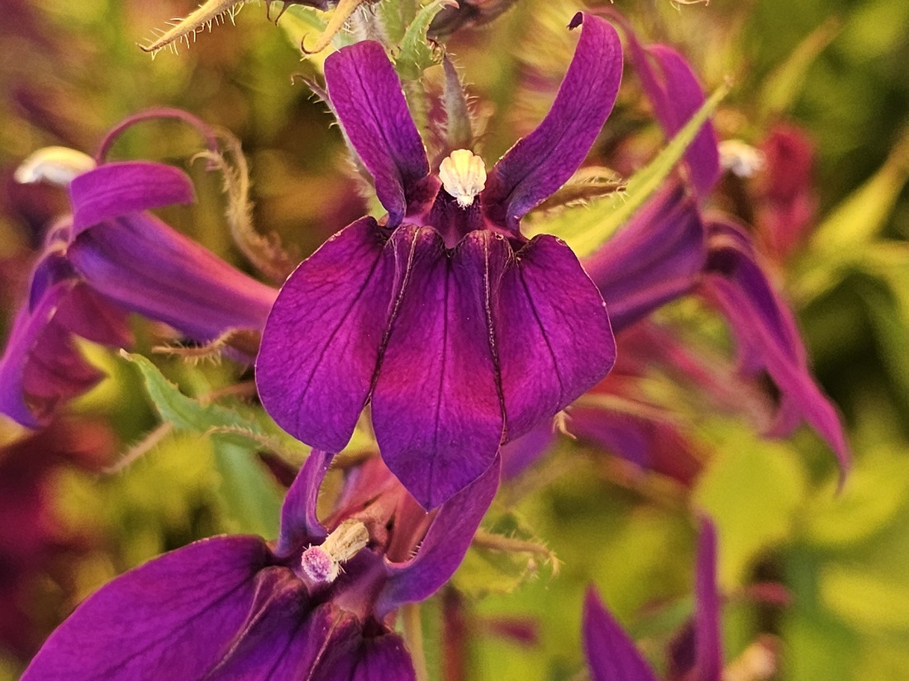
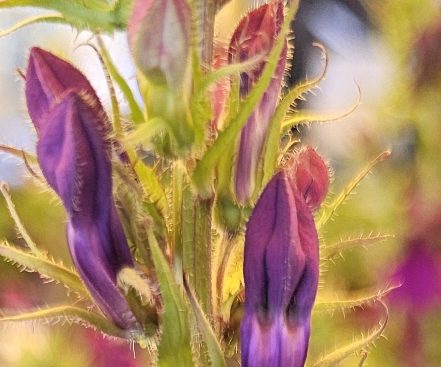

地図を読み込んでいるよ…
🔍 写真も地図も、押しているあいだ拡大して見られるよ（スマホは指を置いてすこし待ってね）。
🌍 の地図＝この子がもともと自生していた場所。──でもこの子は、まだ名前が分からない。名前が分からないと、ふるさとも分からないんだ。だから地図はまっさらのまま、まんなかに「？」を出しておくね。分かったら、ここを塗りに来るよ。
⚠塗れない子だよ＝お店の札は「沢ぎきょう」だけれど、葉の広さと萼の毛から、中身はたぶん北アメリカ産の交配種「宿根ロベリア」（ロベリア・カージナリス×ロベリア・シフィリチカ）＝⭐もし日本のサワギキョウなら北海道〜九州の湿地（三河・Wikipedia）、宿根ロベリアなら親は北アメリカ東部の湿地（カージナリスは南東カナダ〜コロンビア北部・シフィリチカは北アメリカ東部）＝⚠どちらか決められないので、地図は「？」にした。⏳野生のサワギキョウとならべて葉と萼を見くらべたら、塗りなおすよ。
サワギキョウ（沢桔梗）
Lobelia sp.（⚠札は「沢ぎきょう」＝日本のサワギキョウ L. sessilifolia か、宿根ロベリア L. × speciosa 系か＝属は確定・種は要確認）
別名 · 宿根ロベリア（園芸の流通名）／ロベリア ⭐Lobelia＝植物学者ロベルの名から
キキョウ科 · Campanulaceae（ミゾカクシ属 Lobelia · キク目 Asterales）── ⭐図鑑で3人目のキキョウ科（228 キキョウ・263 カンパヌラ・ポシャルスキアナ）／⭐⭐ミゾカクシ亜科ははじめて＝花の作りがほかのキキョウ科とまったくちがう
燻太さんの言葉「キキョウって名前にはいっているけど、キキョウとは違う仲間な気がする。シソ科…に近い気がするな。」── ⭐前半は半分あたり（同じ科の別の亜科＝「別の科とする説もある」）・後半はちがう（葉が互生・茎が丸い・雄しべが筒）
⭐⭐⭐⭐⭐ 名前と学名の由来 ── 「沢の桔梗」と、ロベル先生
- ⭐⭐ 和名「サワギキョウ（沢桔梗）」＝沢（湿地）に生えるキキョウ（三河「湿地に生え」・Wikipedia「山地の湿った草地や湿原などに自生する」）。⭐「桔梗」は花の色（青紫）とキキョウ科であることから＝⚠でも花の形はキキョウとは似ても似つかない（Wikipedia「他のキキョウ類とは花形が全く異なる」）＝⭐燻太さんが「キキョウとはちがう仲間な気がする」と言ったのは、まさにそこ。
- ⭐⭐ 属名 Lobelia＝16世紀フランドルの植物学者マティアス・ド・ロベル（Matthias de l'Obel・1538〜1616）の名前から（⭐人の名前をもらった属名＝✍️の小道の仲間。⚠命名の経緯の一次資料は今回読めていないよ）。
- ⭐ 種小名＝日本のサワギキョウは sessilifolia＝「葉に柄が無い（無柄の葉）」（三河「葉は…無柄」）／ロベリア・カージナリスの cardinalis＝「枢機卿の（緋色の）」＝花の赤／ロベリア・シフィリチカの siphilitica＝かつて梅毒（syphilis）の薬と信じられたことから（英語版Wikipedia）。⚠この株がどれの子かは、下の同定の節へ。
- ⭐ お店の札は「沢ぎきょう」、NHK趣味の園芸の見出しは「サワギキョウ（宿根ロベリア）」＝⭐⭐園芸では、日本のサワギキョウも北アメリカの交配種も、まとめて「サワギキョウ」「宿根ロベリア」の名前で出回っている（NHK「苗の流通が多いのは北米原産のロベリア・カージナリスの交配種で、よく『宿根ロベリア』などの名前で出回っている」）。
⭐⭐⭐⭐⭐ 燻太さんの「シソ科に近い気がする」── 花はそっくり、でも中身がちがう
- ⭐ 燻太さんの言葉＝「キキョウって名前にはいっているけど、キキョウとは違う仲間な気がする。シソ科…に近い気がするな。」
- ⭐⭐⭐ 前半＝半分あたり。──Wikipedia ミゾカクシ属「花形は他のキキョウ科とは大いに異なり、左右相称の花をつける」「一般のキキョウ科が放射相称でツボ型、釣り鐘型の花をつけるのに対して、左右相称の唇花をつけるため、見かけでは全く異なって見える。別の科とする説もある」＝⭐⭐同じキキョウ科の中の、ミゾカクシ亜科という別の部屋。「別の科にしよう」という学者もいた＝⭐燻太さんの目は、その線引きのところを見ていた。
- ⭐⭐⭐ 後半＝シソ科ではない。──唇形の花はたしかにシソ科そっくり（180 ブルーサルビアを思い出す形）。⭐でも、体のつくりが3つちがう＝①茎が丸い（シソ科は四角）②葉が互生（シソ科は対生。写真①②で、葉は1枚ずつ互いちがい）③⭐⭐⭐雄しべが合着して筒になっている（写真③の白い筒＝シソ科の雄しべは4本が離れて立つ）。⭐「その分類群の体のつくりとして、この写真はありえるか」＝073で決めた問いかた＝対生でない時点でシソ科はありえない。
- ⭐⭐⭐⭐⭐ 写真③の白い筒が、この属の心臓＝Wikipedia「雄しべは雌しべの周りにしっかり巻くように並ぶ。それらは唇弁の上に伸びて、先端はやや下を向く」＝⭐⭐5本の雄しべが筒になって、めしべをすっぽり包み、上唇のまんなかから前へ突き出す。⭐同じキキョウ科の228 キキョウと同じく雄性先熟（Wikipedia サワギキョウ「雄しべから花粉を出している雄花期と、その後に雌しべの柱頭が出てくる雌花期がある」）＝⭐⭐⭐写真③の上の花は筒の先が白い＝雄花期。下の花は筒の先から桃色の柱頭が出ている＝雌花期＝⭐1枚の写真に、両方の時期が写っていた。⭐筒の先の白いふさふさは、葯の先の毛（英語版Wikipedia は Lobelia の一般説明として「upper two lobes may be erect while the lower three lobes may be fanned out」＝上2・下3の形はこの属の共通の顔）。
⭐⭐⭐ この植物のこと ── 毒草で、薬草で、湿地の子
- ⚠⚠⚠ 全草に有毒アルカロイドロベリン＝三河「美しいが、毒草としても知られ、全草に有毒なアルカロイド lobeline を含有する」・Wikipedia「全体に毒性の強いアルカロイドを持つ有毒植物」・英語版「ロベリンはニコチンに似ているので、子ども・妊婦・心臓病の人には危険」＝⭐見るだけ。口に入れない。⭐横溝正史『悪魔の手毬唄』では「お庄屋殺し」の名で殺人に使われた（Wikipedia）。
- ⭐ 日本のサワギキョウ＝高さ50〜100cm・枝分かれしない・太い根茎があり冬に地上部は枯れる・花期8〜9月・北海道〜九州の湿地に群生（三河・Wikipedia）。⭐日本のミゾカクシ属は4種だけ（Wikipedia）＝サワギキョウ・ミゾカクシ・タチミゾカクシ・オオハマギキョウ（小笠原の低木状の子）。
- ⭐⭐ 世界では約200〜440種（Wikipedia 日英）＝⭐アフリカの高山には、幹のように太く育つ「ジャイアントロベリア」がいる（Wikipedia ミゾカクシ属＝ケニア山やキリマンジャロの標高3000〜4500mで、何百枚もの苞葉を塔のように重ねて氷点下から子房を守る）。⭐同じ属に、田んぼのあぜを這うミゾカクシと、高山の塔がいる。
- ⭐⭐ 園芸の「宿根ロベリア」＝NHK趣味の園芸「北米原産のロベリア・カージナリス（ベニバナサワギキョウ）の交配種」「草丈60〜100cm・開花期8〜9月・花色は青、紫、赤、ピンク、白・耐寒性強い」／「F1ファン」シリーズ（ブルー・サーモン・スカーレット）が流通の主流。⭐写真①の奥に、花穂がまだ緑の株がたくさん＝これから咲く苗。
- ⭐ 親のふたり＝ロベリア・カージナリス＝北アメリカ東部〜コロンビア北部の川べりや湿地。緋色の花はハチドリに受粉してもらうため（英語版Wikipedia）／ロベリア・シフィリチカ＝北アメリカ東部の湿った草地。青紫の花にマルハナバチなど長い舌のハチ（Illinois Wildflowers）＝⭐⭐赤はハチドリ、青紫はハチ、と親の代で客が分かれている＝⭐紫の交配種にだれが来るかは、宿題③。
⚠ 同定について ── 札は「沢ぎきょう」。でも中身は、たぶん宿根ロベリア
- ⭐⭐⭐⭐ 属は確定＝ミゾカクシ属 Lobelia（上の節＝唇形・葯筒・互生）。
- ⚠⚠ 種は、札のとおりに決められない。──日本のサワギキョウ L. sessilifolia＝三河「茎は黄緑色、無毛、中空で直立し、枝分かれしない。葉は螺旋状に互生し、無柄、長さ4〜7cmの披針形、縁に細かい鋸歯がある」「花冠は青紫色、長さ約3cm」。⚠この株は＝萼と花柄に白い毛がびっしり（写真③④）・葉は幅の広い卵状披針形で、鋸歯が粗い（写真①②）・花は大きく濃い紫＝⭐「無毛・細い披針形」と合わない。
- ⭐⭐⭐ 合うのは北アメリカの親＝ロベリア・シフィリチカ L. siphilitica＝Illinois Wildflowers「葉は倒披針形・倒卵形・卵形または広楕円形で、縁は鋸歯」「萼は5つの線状披針形の歯に深く裂け、目立って毛が多い」「花冠は青紫」／ロベリア・カージナリス L. cardinalis＝英語版Wikipedia「葉は長さ20cm・幅5cmまでの披針形〜卵形で鋸歯」「花は緋色で5深裂、幅4cmまで」。⭐⭐NHK趣味の園芸＝「ロベリア'ベドラリエンシス'（Lobelia × speciosa）＝紫色の大輪花で、花つきもよく性質も強い」「ロベリア・カージナリス（ハイブリッド）…『宿根ロベリア』の名前でよく出回る」＝⭐⭐この株＝カージナリス×シフィリチカ系の交配種（宿根ロベリア）の紫の品種が、いちばんありそう。
- ⚠ でも決め手が足りない＝品種名の札が無い・野生のサワギキョウとならべていない＝⭐だから学名は Lobelia sp. にして、和名は札のとおり「サワギキョウ」＋「たぶん宿根ロベリア」と書いた。⏳宿題①＝野生のサワギキョウに会って、葉の幅と萼の毛を見くらべる。
- ⭐ 落とした相手＝228 キキョウ・263 カンパヌラ（放射相称の釣り鐘）／シソ科（対生・四角い茎・雄しべ4本）／ミゾカクシ（径1cm・地を這う）／ルリミゾカクシ（春の花壇のロベリア L. erinus）（小さくて青、一年草あつかい）。
⏳ 宿題 ── 4つ
- ⏳⭐⭐⭐⭐⭐ ①野生のサワギキョウに会う＝山の湿地・8〜9月＝茎無毛・葉は無柄で細い披針形（三河）＝⭐お店の子と葉の幅・萼の毛を見くらべて、札の中身を決める。
- ⏳⭐⭐⭐ ②雄花期→雌花期＝1本の穂の上（白い筒）と下（桃色の柱頭）で。
- ⏳⭐⭐ ③だれが来るか＝親は赤→ハチドリ、青紫→ハチ。紫の交配種には？
- ⏳⭐ ④おまけのミゾカクシ＝田んぼのあぜ・径1cmの同じ形。
- ⚠⚠⚠ 毒草＝見るだけ。
参考：三河の植物観察「サワギキョウ」（Lobelia sessilifolia／キキョウ科ミゾカクシ属／湿地に生え、美しいが、毒草としても知られ、全草に有毒なアルカロイド lobeline を含有する／茎は黄緑色、無毛、中空で直立し、枝分かれしない／葉は螺旋状に互生し、無柄、長さ4〜7cmの披針形、縁に細かい鋸歯／花冠は青紫色、長さ約3cm。上唇は2深裂し、下唇は3中裂する／萼は鐘状、先が5深裂）／Wikipedia「サワギキョウ」（茎の高さは50cmから100cm／花期は8月から9月／キキョウと同じく雄性先熟で、雄しべから花粉を出している雄花期と、その後に雌しべの柱頭が出てくる雌花期がある／北海道、本州、四国、九州…山地の湿った草地や湿原／他のキキョウ類とは花形が全く異なる／日本には4種／横溝正史『悪魔の手毬唄』の「お庄屋殺し」）／Wikipedia「ミゾカクシ属」（花形は他のキキョウ科とは大いに異なり、左右相称の花をつける／別の科とする説もある／花弁は下側3枚は基部で互いにつながり…唇弁を作る。上二弁は細くて左右に分かれ、唇弁の上側に伸びる。雄しべは雌しべの周りにしっかり巻くように並ぶ。それらは唇弁の上に伸びて、先端はやや下を向く／ほぼ全世界に約200種／ジャイアントロベリア）／Wikipedia「ミゾカクシ」（水田雑草の一つ／茎は細くて横に這い／花は径1cmほど、上二弁と下三弁に分かれ、下三弁はくるりと外へ巻く／花は6〜10月／別名アゼムシロ）／NHK出版 みんなの趣味の園芸「サワギキョウ（宿根ロベリア）」（苗の流通が多いのは北米原産のロベリア・カージナリス（ベニバナサワギキョウ）の交配種で、よく「宿根ロベリア」などの名前で出回っている／草丈60〜100cm・開花期8〜9月・花色は青、紫、赤、ピンク、白／種類＝ロベリア・シフィリチカ（オオロベリアソウ・北アメリカ原産・サワギキョウに似て花が密につく）・ロベリア'ベドラリエンシス'（Lobelia × speciosa・紫色の大輪花）・F1ファンシリーズ）／Illinois Wildflowers “Great Blue Lobelia (Lobelia siphilitica)”（leaves oblanceolate, obovate, ovate, or broadly elliptic…serrated／calyx deeply divided into 5 linear-lanceolate teeth and conspicuously hairy／blue-violet corolla…upper lip has 2 slender erect lobes, lower lip has 3 descending lobes／pollinated by bumblebees and other long-tongued bees）／Wikipedia “Lobelia cardinalis”（up to 1.2 m tall／leaves up to 20 cm long and 5 cm broad, lanceolate to oval, toothed／flowers vibrant red, five deep lobes, up to 4 cm across／primarily pollinated by the ruby-throated hummingbird／southeastern Canada through the eastern and southwestern United States, Mexico and Central America to northern Colombia）／Wikipedia “Lobelia”（444 species／simple, alternate leaves and two-lipped tubular flowers, each with five lobes／Many members of the genus are considered poisonous, with some containing the toxic principle lobeline／lobeline's similarity to nicotine）／⭐道の駅の手書きの札「沢ぎきょう 150円」・生産者の札「花き苗物／産地 広島県世羅町産」。